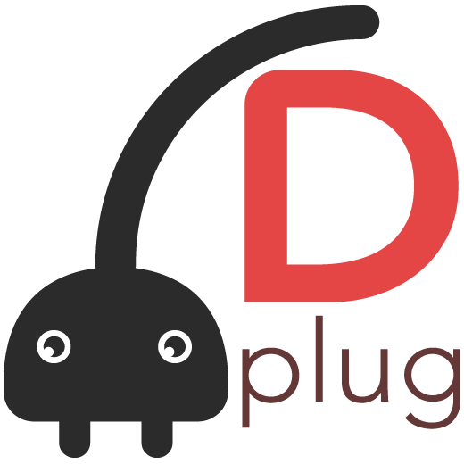

The Dplug audio plug-in framework
# Table of contents
# Introduction
Dplug is an open-source audio plug-in framework existing since 2013.
A plugin framework is a library whose aim is to make cross-platform audio development a practical reality. As such, Dplug can be used to create audio effects (such as a VST 2.4) for use in popular host programs (such as FLStudio, Logic, Pro Tools, Cubase...).
Dplug is currently hosted on GitHub: https://github.com/AuburnSounds/Dplug.
# Features of Dplug
Dplug lets you create products aimed at audio production on the desktop.
- macOS, Windows and Linux.
- VST 2.4, VST3, Audio Unit, AAX, and LV2.
- Lightweight, low-overhead client wrappers with minimal locking.
- As-liberal-as-possible licensing. You still have to comply with the VST2 licence agreement, the VST3 licence agreement, and the AAX licence agreement.
- Public bugtracker.
- Sophisticated games-like softwarer renderer.
- Supported DAWs listed here.
Options?
Maintaining user sessions compatibility and avoiding breaking it is of paramount importance for audio plug-ins developers.
Often you'll want to update Dplug to a major version, but still retain user sessions compatibility. Other frameworks use C preprocessor macros for that purpose.
Dplug's answer to this is Dplug Options. They let you upgrade Dplug without breaking user sessions. Instead you break user sessions at your own pace, when making major updates to your plug-ins.
# What makes Dplug different?
Dplug has a few peculiarities compared to the other plug-in framework:
- Dplug is written in the D programming language.
- Dplug can provide semi-procedural rendering for interfaces in order to have smaller memory and disk footprint.
This rendering is fully customizable so as to support a wide variety of shading techniques. It doesn't use the GPU, so it's very stable and never cause OpenGL driver issues.
- Dplug has been created and continuously maintained by its original author, with the help of a newly-born community.
- Dplug is made for professional plug-in developers. It can be used free of charge,
however do not expect any personal support; it's not really a framework for beginners.
- That said, Dplug's primary goal is to make authoring plug-ins a pleasant experience.
# Easier life through Dplug
Writing and selling audio plug-ins is a bit like portfolio management,
one must offer value while not getting into product debt, offering more products that one can possibly maintain and update.
Still, having an extensive product portfolio is important for revenue. Therefore, one of Dplug's core principle is to create the minimum maintenance load,
so that you don't get unforeseen work without your consent.
So, what does Dplug do to make your life easier?
- Building plug-ins is a single
dplug-build command-line invocation - for all platforms.
- Support for Windows and macOS installers out of the box.
- Support for Apple Notarization and code-signing out of the box.
- Static link with the MSCRT runtime libraries to distribute only one single file.
- Tutorials for setting up your own CI.
- A number of plug-in tools to speed up development or regression searching.
- All breaking changes are readily documented in the Release Notes (breaking changes are generally unavoidable, however Dplug uses SemVer to batch them).
# Easier life through D
The D programming language is a general-purpose programming language with static typing, systems-level access, and C-like syntax. It provides strong improvements over C++ along with uniquely composable new kind of abstractions (though Dplug doesn't make use of such power).
It is very nice and trendy.
OK, but what does D bring to the table day to day, in the trenches, for the audio blue collar worker?
- Faster builds out of the box without header-only libraries or combined source.
- Use the same compiler (LDC) for all 3 platforms without added efforts. This lessen the occurence of many platform-related compiler issues. Use the same super-powerful and recent LLVM backend for all your releases.
- Generating Visual Studio projects is a single
dub generate visuald call. (What is VisualD?)
- Using bog-standard D package manager DUB. Language package managers are one of the major productivity improvements brought by modern languages.
- Builtin complex numbers. A very small plus, but it's nice.
- No more need to learn C++, or worse - keep up with the changes in C++.
"But D is a GC language so you can't possibly do audio with it, right?"
GC in D is pay-as-you-go (the less you use it, the better it performs) and optional.
Dplug plug-in runs with the D runtime left disabled, so the D GC is just not running in a Dplug plug-in. It is disabled, so there is zero GC allocation or GC collection in a Dplug plug-in.
Besides, Dplug plug-ins used to run the GC, and it didn't cause any particular problems.
# Downsides of Dplug
Because Dplug receives about 6 man-months of work every year,
it's frequent feature development get postponed in favour of maintenance tasks, such as keeping up with macOS.
Here is a list of missing features: (as of early 2020)
- HiDPI
- Plug-in resizing
- VST2 chunks
- MIDI output
- Sidechain input
- Non-automatable data that would be stored in chunks (example: stored impulse response)
- Dplug doesn't have an "audio processor" abstraction, or audio graphs.
- A paucity of software rendering primitives. You often have to build your own.
We want to do all of those items, but didn't get the time yet. Check the Release Notes to get an idea of Dplug's velocity.
You can also sponsor Dplug to make it happen.
# Alternatives to Dplug
Be sure to consider the alternatives before settling on a plug-in framework.
For example, JUCE has implemented every one of the missing features listed above.
# Made with Dplug
Check out the products made with Dplug.
You can of course build your own UI style.
# Getting started